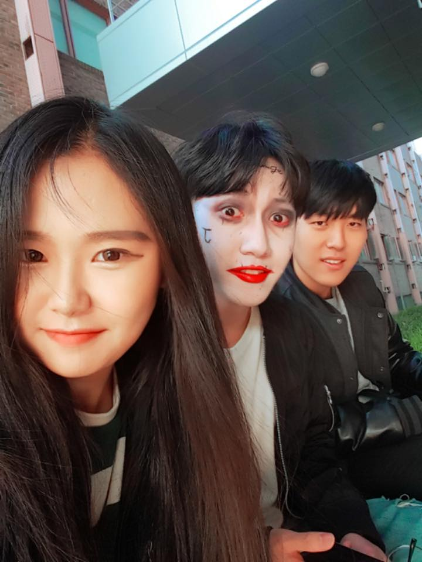

하지만 문장의 단락을 바꿀때는 paragraph를 사용합니다.
br과 p 태그는 각각의 차이점이 있는데, line-break는 자유롭게 줄을 늘이거나 줄일 수 있는 반면에태그와 태그사이의 공간을 margin이라 합니다. 또한 위치와 크기를 정합니다.
사진을 가져오는 방법은 image 방법으로 가져오고 screen으로 주소를 씁니다.

표를 만드는 방법은 table을 사용해서 만드는 것인데, 이 부모태그인 table에 따라오는 자식태그는 tr과 td가 있습니다.
| head | 98.1% |
| body | 97.9% |
| html | 97.9 |